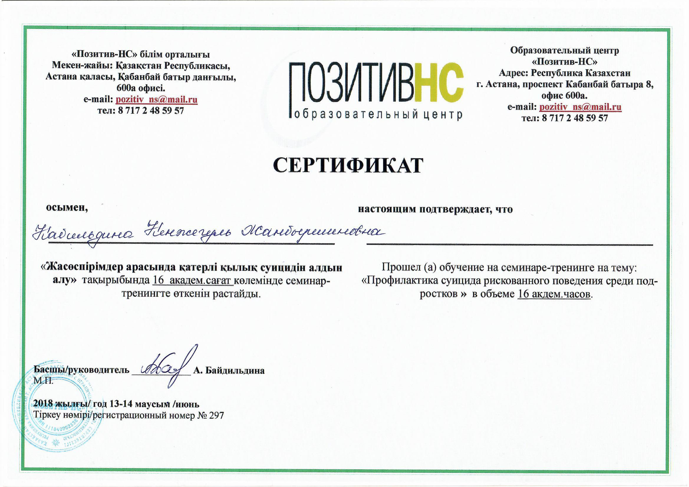
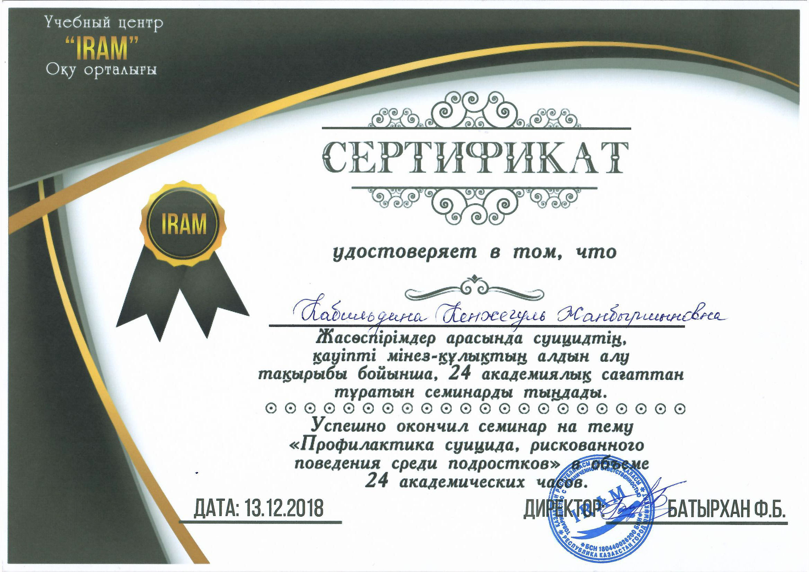
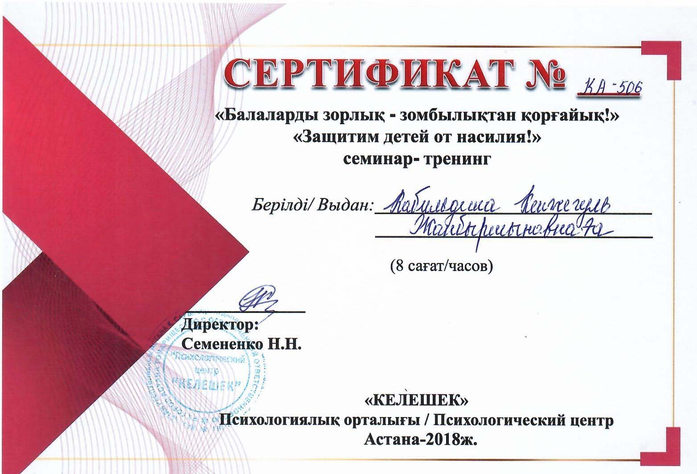
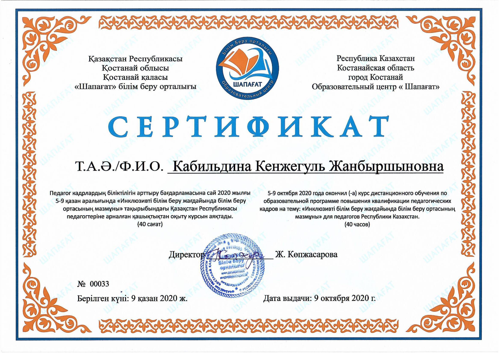
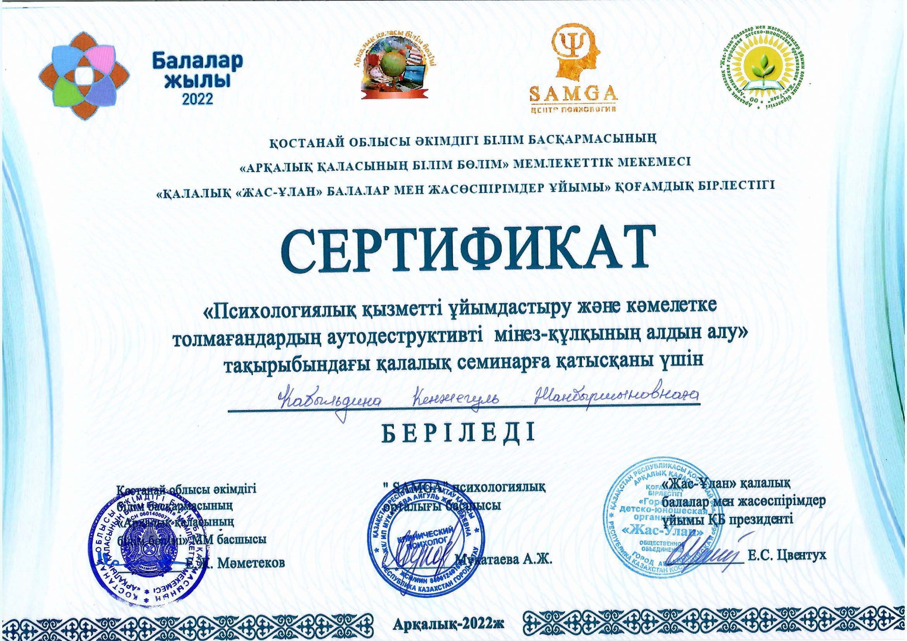
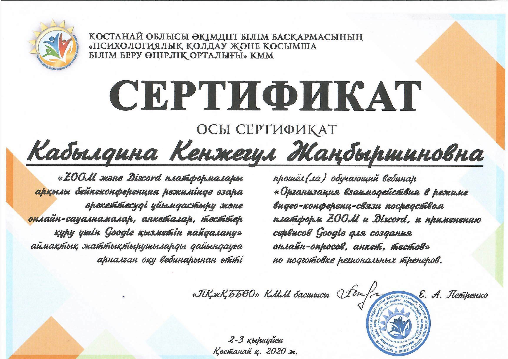
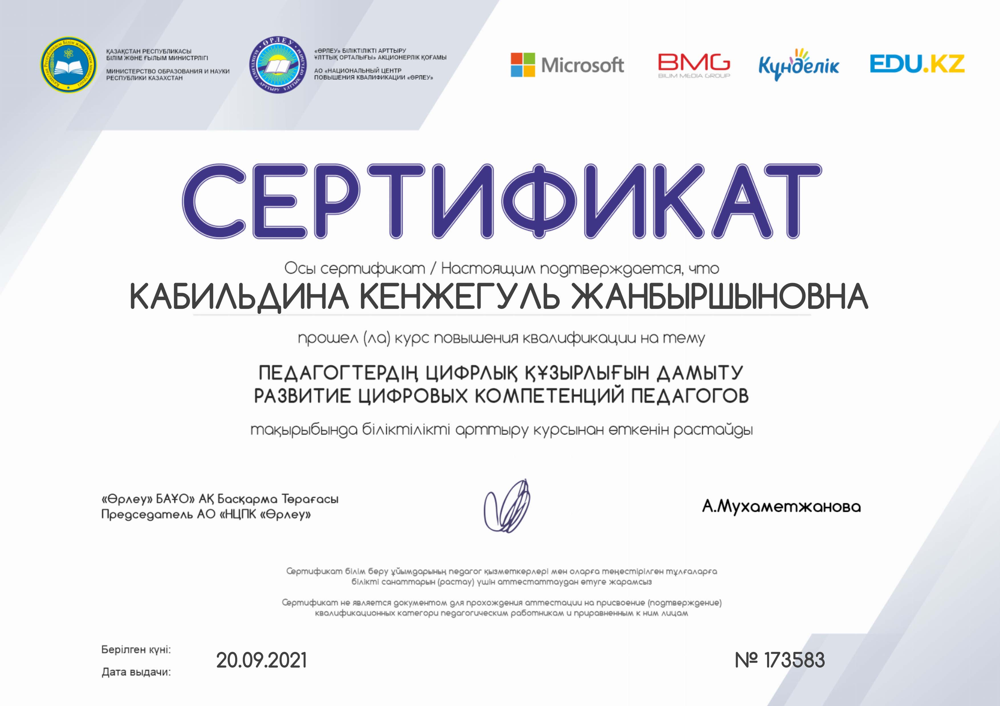

13-14.06.2018 ж- Жасөспірімдер арасында қатерлі қылық суицидтін алдын алу семинар-тренингке қатысқаны үшін. Астана «Позитив - НС» білім орталығы

13.12.2018 ж- Жасөспірімдер арасында суицидтің қауіпті мінез-құлықтың алдын алу тақырыбы бойынша семинарға қатысқаны үшін. «IRAM» оқу орталығы

Астана- 2018 ж «Келекшек» психологиялық орталығы өткізген «Балаларды зорлық-зомбылықтан қорғайық!» семинар-тренингке қатысқаны үшін сертификат КА-506

Сертификат «Шапағат» білім орталығы Қостанай қаласы. «Инклюзивті білім беру жағдайында білім беру ортасының мазмұны» курс. 09.10.2020 ж №0033

2022 ж – «Психологиялық қызметті ұйымдастыру және кәмелетке толмағандардың аутодиструктивті мінез-құлықының алдын алу» қалаалық семинарға қатысқаны үшін сертификат

2020 ж – Қостанай облысы әкімдігі білім басқармасының «Психологиялық қолау және қосымша білім бері өңірлік орталығы» КММ «Zoom және Discord платформалары арқылы бейнеконференция режимінде өзара әрекеттесуді ұйымдастыру және онлайн-сауалнамалар, анкеталар, тесттер құру үшін Google қызметін пайдалану» аймақтық жаттықтырушыларды дайындауға арналған оқу вебинарынан өткені туралы сертификат

20.09.2021 ж – Педагогтердің цифрлық құзырлығын дамыту курсынан өткені үшін сертификат . «Өрлеу» №173583

27.05.202 ж- Курс сертификаты «Оқушылардың әлеуметтік дағдыларын дамыту: отбасы, мектеп, мансап»